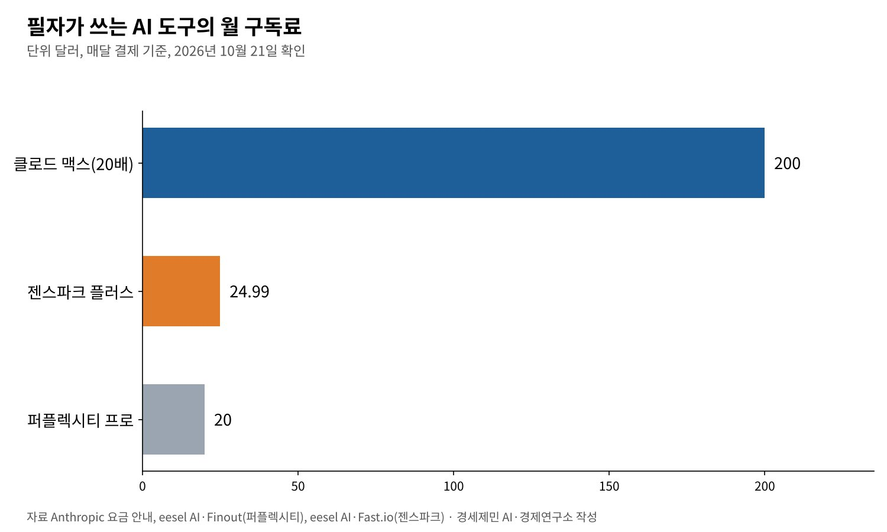
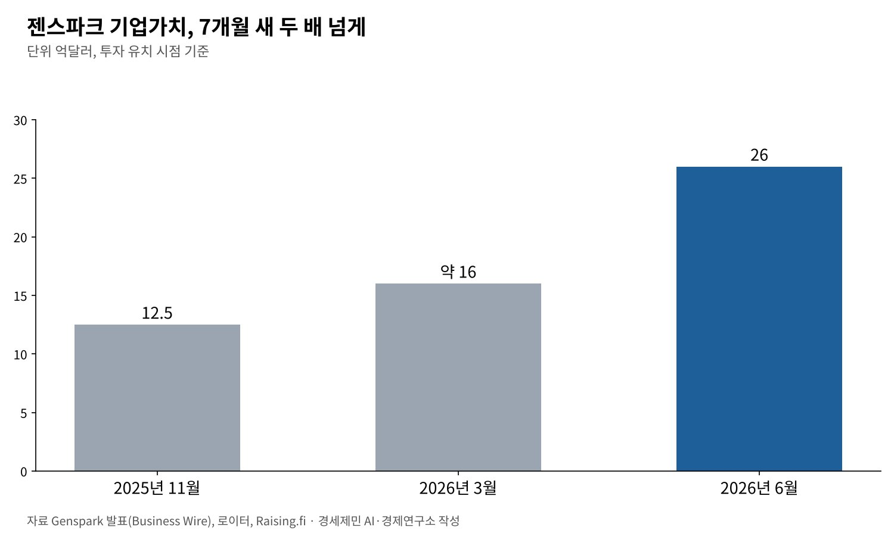

[AI 칼럼] AI 다섯 개로 220쪽 보고서를 써 보니, 일한 도구와 논 도구
클로드는 본문과 경제성 분석, 퍼플렉시티는 팩트체크, 젠스파크는 뒷정리
세 도구 공식 요금만 월 245달러 안팎, 도구마다 잘하는 일이 다르다
젠스파크 기업가치 7개월 새 12억5000만달러에서 26억달러로, 통합 플랫폼 경쟁
필자는 한 공공시설 설립의 경제적 타당성을 검토하는 용역 보고서 220쪽을 AI 서비스 다섯 개로 썼다. 다섯 달 동안 실제 일에 부딪히며 도구마다 무엇을 잘하고 무엇에 약한지 겪었다.
쓴 도구는 클로드, 퍼플렉시티, 구글 제미나이, 챗지피티, 젠스파크다. 구독료를 내는 만큼 일을 해 주는지 따졌다. 결론부터 말하면 한 도구로 모든 일을 끝낼 수는 없었다.
AI 시장은 그사이 더 빨리 움직였다. 여러 모델을 한곳에 묶은 젠스파크의 기업가치는 7개월 새 두 배 넘게 뛰었다. 개인의 작업 경험과 시장의 흐름을 함께 짚는다.
1. 본문과 경제성 분석은 클로드가 맡았다
보고서 본문은 모두 클로드의 프로젝트 기능 안에서 썼다. 자료 관리와 선행연구 정리, 경제성 분석을 한 프로젝트에서 돌렸다. 한 번 적어 둔 지침이 모든 대화에 걸려 매번 배경을 설명할 필요가 없었다.
경제성 분석에는 편익·비용 비율(B/C), 순현재가치(NPV), 내부수익률(IRR)을 셈했다. 조건이 바뀌면 결과가 얼마나 흔들리는지 보는 민감도 분석도 넣었다. 수식과 가정을 하나씩 확인하며 표를 짰다.
시각자료 68개의 설계 지시문도 클로드가 짰다. 실제 그림은 구글의 문서 분석 도구 노트북엘엠(NotebookLM)으로 만들었다. 설계와 제작을 나눈 셈이다.
2. 팩트체크는 퍼플렉시티, 나머지는 보조에 그쳤다
사실 확인은 퍼플렉시티의 심층 조사 기능이 주력이었다. 실시간 웹 검색 결과에 출처를 붙여 주니 원문을 다시 열어 대조하기 쉬웠다. 사실관계 확인 용도로는 아직 이만한 도구를 찾지 못했다.
챗지피티는 그림 생성과 코딩, 창작 글쓰기까지 기능이 넓다. 이번 작업에서는 사실과 다른 내용을 그럴듯하게 지어내는 일이 잦았다. 검증 보조로만 쓰다 구독을 멈췄다.
제미나이는 글과 그림, 소리, 영상을 함께 다루는 도구다. 이번에는 노트북엘엠과 묶어 시각자료를 만드는 데 주로 썼다. 검색 검증 보조로도 썼지만 처리 속도가 기대에 못 미쳤다.
노트북엘엠은 오탈자가 많았다. 지시문 파일 이름과 생성 그림 파일 이름이 맞지 않았다. 지시문 68개를 넣어 그림 70여개를 받았는데 어느 그림이 어느 지시문인지 맞출 길이 없었다. 중복 파일도 섞였다.
3. 뒷정리와 발표 자료는 젠스파크가 앞섰다
정리되지 않은 지시문 68개와 그림 70여개를 젠스파크에 넘겼다. 젠스파크는 압축을 풀고 파일 동일성을 검사하는 코드로 중복 7개를 골라냈다. 그림 속 한글을 광학문자인식(OCR)으로 읽었다.
읽어 낸 낱말을 지시문과 대조해 그림 68개를 지시문 68개에 하나씩 짝지었다. 남는 그림 3개는 따로 빼고, 짝이 불확실한 2건에는 '육안 확인 필요'라고 표시했다. 파일 이름도 일괄로 바꿨다.
발표 자료도 견줘 봤다. 같은 강연 원고를 발표 자료 제작 도구 감마와 젠스파크에 넣었다. 감마는 워터마크가 붙은 사진을 되풀이해 깔았고 쪽마다 핵심어 몇 개만 남겼다.
젠스파크는 남색·흰색·주황 세 색을 끝까지 지키며 쪽마다 서너 문장을 넣었다. 연표와 흐름도, 비교표처럼 도식도 다양했다. 피디에프(PDF) 글자를 뽑을 때 감마는 한글이 깨졌지만 젠스파크는 깨끗했다.
4. 구독료를 따져 보면, 세 도구 공식 요금만 월 245달러
10월 21일 기준으로 확인한 요금을 보면 클로드 맥스는 월 100달러와 200달러 두 단계다. 필자가 쓰는 사용량 20배 단계가 월 200달러다. 글쓰기와 분석의 중심축으로 아직 대안을 찾지 못했다.
퍼플렉시티 프로는 월 20달러다. 팩트체크 전담으로 역시 대안이 마땅치 않다. 젠스파크 플러스는 매달 결제하면 월 24.99달러, 1년치를 한꺼번에 내면 월 19.99달러다. 발표 자료와 파일 정리를 맡긴다.
세 도구만 더해도 월 245달러 안팎이다. 구글 제미나이는 노트북엘엠과 소리·인포그래픽 제작에 한정해 쓴다. 비싼 도구 하나보다 잘하는 일이 다른 도구 몇 개를 나눠 쓰는 편이 생산성이 높았다.

5. 도구 따로 쓰기에서 한 플랫폼 묶기로
시장은 도구를 묶는 쪽으로 간다. 젠스파크는 2025년 11월 2억7500만달러를 투자받으며 기업가치 12억5000만달러를 인정받았다. 출시 다섯 달 만에 연간 환산 매출 5000만달러를 넘겼다고 밝혔다.
2026년 3월에는 투자 유치 규모를 3억8500만달러로 늘리며 기업가치 약 16억달러를 받았다. 6월에는 1억달러를 더해 투자액이 4억8500만달러, 기업가치가 26억달러가 됐다.
로이터 보도를 보면 젠스파크는 2025년 4월 지금의 서비스를 내놓은 뒤 1억달러, 2026년 1~3월에 1억5000만달러의 연간 환산 매출을 더했다. 지피티와 클로드, 제미나이 등 30개 넘는 모델을 한 작업 공간에서 쓴다.

필자의 경험과 시장은 같은 방향을 가리킨다. 한 모델이 모든 일을 잘하지 못하니 여러 모델을 골라 쓰는 일이 값이 된다. 다만 묶음 플랫폼도 결국 남의 모델을 빌려 쓴다. 원가와 품질을 쥔 쪽은 모델을 만든 회사다.
6. 도구보다 중요한 것은 검증하는 사람이다
다섯 달의 결론은 단순하다. AI는 초안과 정리를 빠르게 해 준다. 틀린 사실을 그럴듯하게 섞는 일도 여전하다. 220쪽의 수치와 문헌은 결국 사람이 원문을 열어 하나씩 맞췄다.
도구마다 잘하는 일을 나누고, 마지막 검증은 사람이 쥔다. 구독료는 도구를 사는 돈이 아니라 검증할 시간을 사는 돈이다. 그 시간을 어디에 쓰느냐가 보고서의 품질을 가른다.
참고문헌
기관 자료
- Anthropic, "Pricing", 2026년 10월 21일 확인. https://claude.com/pricing
- Anthropic 고객지원, "How much does the Max plan cost?", 2026년 10월 21일 확인. https://support.claude.com/en/articles/11049744-how-much-does-the-max-plan-cost
- Genspark(Business Wire 배포), "Genspark Raises $275M Series B, Launches AI Workspace to Put Busywork on Autopilot", 2025년 11월 20일(Enid News 게재). https://www.enidnews.com/region/genspark-raises-275m-series-b-launches-ai-workspace-to-put-busywork-on-autopilot/article_4bb60906-78a3-5967-928f-9ca51e3f1456.html
- Genspark(Business Wire 배포), "Genspark.ai Extends Series B to $485M at $2.6B Valuation, Appoints CRO", 2026년 6월 18일(TechIntelPro 게재). https://techintelpro.com/news/ai/agentic-ai/gensparkai-extends-series-b-to-485m-at-26b-valuation-appoints-cro
언론 보도
- Prakhar Srivastava, "AI startup Genspark valued at $2.6 billion in latest funding round", 로이터(SRN News 게재), 2026년 6월 17일. https://srnnews.com/genspark-ai-valued-at-2-6-billion-in-latest-funding-round/
- Raising.fi Staff, "Genspark.ai Secures $385 Million in Series B Funding to Enhance AI Workspace", Raising.fi, 2026년 4월 25일. https://raising.fi/news/genspark-ai-series-b-march-2026
- "Genspark AI pricing (2026): what it really costs", eesel AI, 2026년 7월 20일. https://www.eesel.ai/blog/genspark-ai-pricing
- "Genspark AI: Features, Pricing, and Best Alternatives in 2026", Fast.io, 2026년 6월 24일. https://fast.io/resources/genspark-ai-review-2026/
- "Perplexity pricing 2026: Is the $20/mo Pro plan worth it?", eesel AI, 2026년 6월 23일. https://www.eesel.ai/blog/perplexity-pricing
- "Perplexity Pricing in 2026 for Individuals, Orgs & Developers", Finout, 2026년 4월 27일. https://www.finout.io/blog/perplexity-pricing-in-2026
[사진 출처]
- [사진1] Negative Space, "Laptop Programmcode.jpg", 위키미디어 공용, CC0. https://commons.wikimedia.org/wiki/File:Laptop_Programmcode.jpg
※ 이 기사는 AI 프로그램 클로드를 활용해 작성했습니다.
관련기사
- [AI 칼럼] '읽는 뉴스' 저물고 '보는 뉴스' 떴다, 이제 AI가 뉴스를 답한다
- [AI 칼럼] AI 시대 진짜 공부, 따지고 충분히 자야 머리에 남는다
- [AI동향] AI 패권 경쟁의 병목은 메모리, 9월 반도체 수출 603억 달러
- [AI동향] 오픈AI, AI가 쓴 수학 논문 722편 공개…하루 만에 3편 철회
저작권자 © AI경세제민 무단전재 및 재배포, AI학습 및 활용 금지